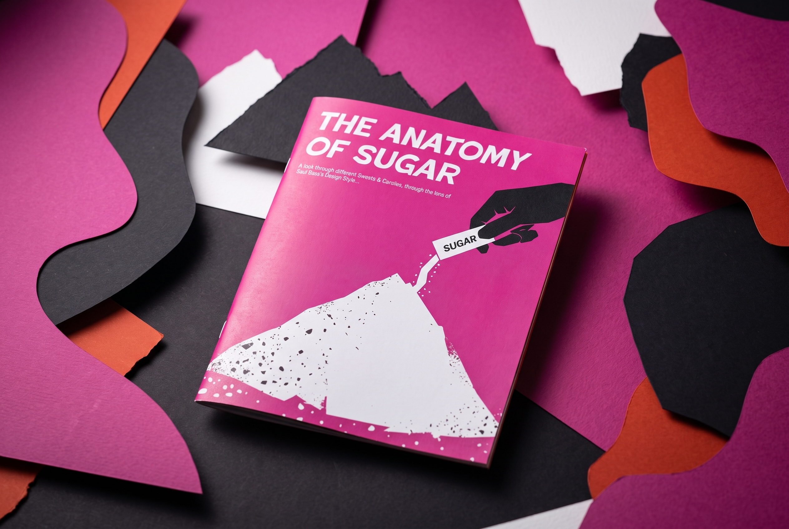
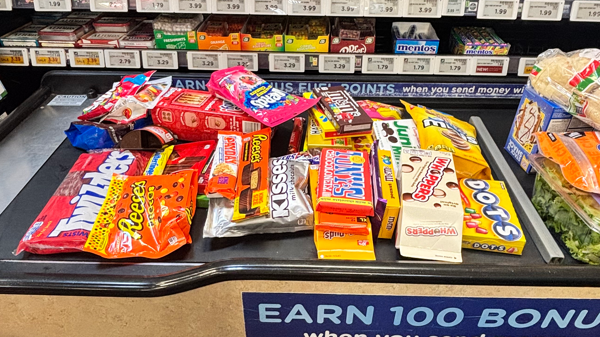
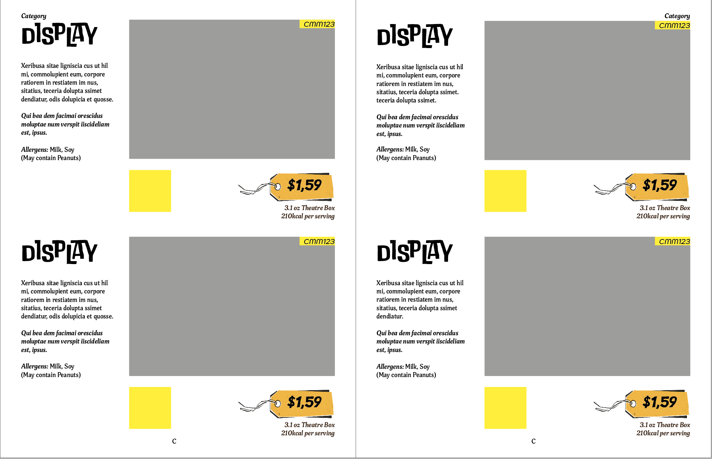
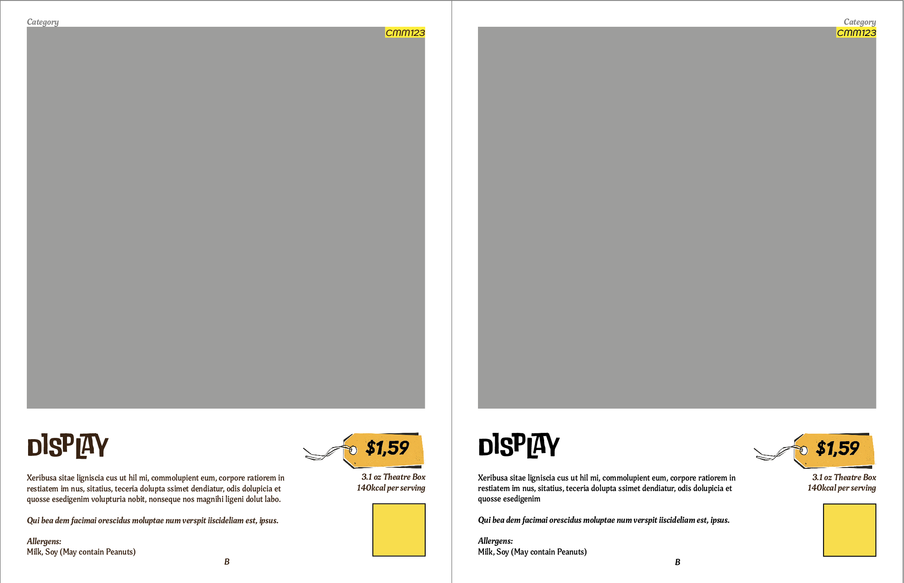
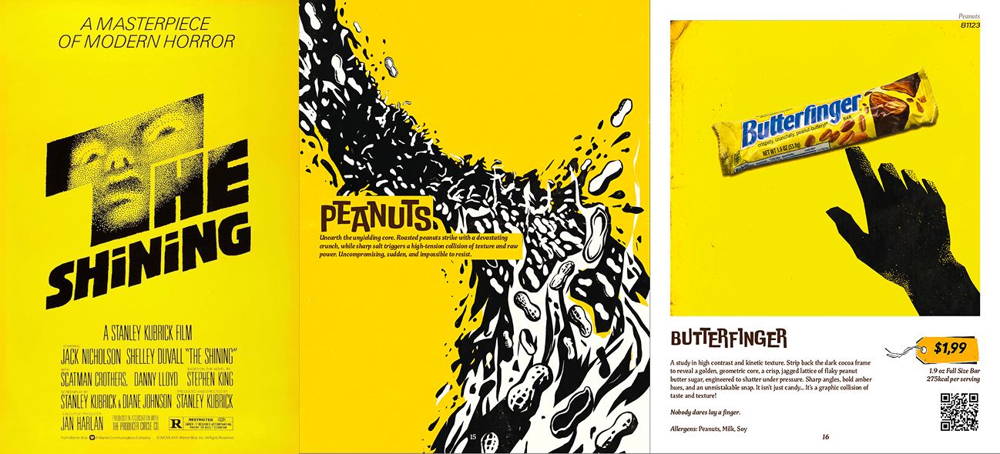
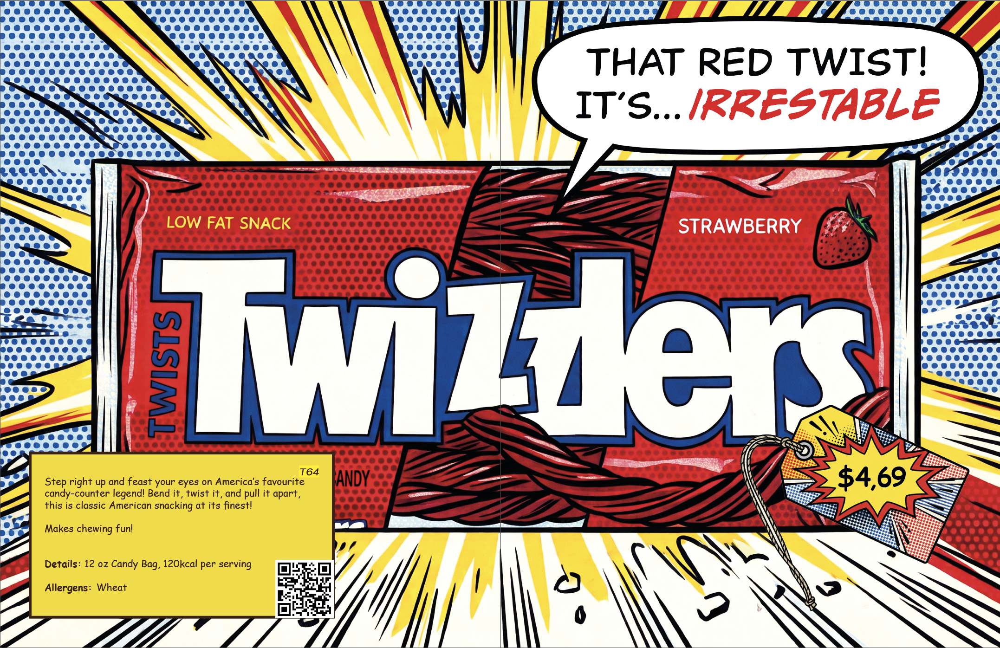

The Anatomy of Sugar

Summary Of Project
The Anatomy of Sugar is a catalogue built to sell 30+ sweets, with Saul Bass-inspired imagery made from my own photography, AI generation and a lot of hands-on editing.
Contents
Project Specifications
-
The project ran for about 2 months.
-
Software used: InDesign, Photoshop and Gemini.
-
A catalogue selling 30+ products.
-
Style inspired by Saul Bass.
-
Role: solo project (photography, art direction, layout and image editing).
-
AI use: how Gemini was used.
The Task
I was given the task of creating a catalogue with the goal of selling a set of 30 or more products of my choosing. I chose sweets because of their unique packaging and their different categories (chocolates, peanuts, gummies and more).
I also made a website for the catalogue:
https://unwisegenius.com/catalogue.html ↗Photoshoot
To start the project, I needed photos of the sweets, so off to City Market I went, where I bought $90 worth of them. I should note these photos were taken three weeks after I moved to Colorado for my year abroad, so that was definitely not the welcome I was expecting…

I then took a bunch of photos of the different packaging so I could get the highest quality when generating images using Gemini. (I know, I’m so sorry.)
Designing the Catalogue
I then went into InDesign to create parent pages with multiple layouts for the catalogue. I kept in mind that the main objective was to sell the products, so there was a real focus on the imagery, with the text and other assets used to support it and act as a foundation for selling each product.


Generating the Imagery
With Gemini, I generated a lot of images of these sweets in different Saul Bass styles. Each category was inspired by his work, so, for example, the peanuts were inspired by his poster for The Shining.

This process took a fair bit of time. I’d say around 4 days of solid generation and editing to get each image colour corrected, with the correct packaging and details, and in the Saul Bass style I was going for. I was pleased with the results, even if I disagree with using AI to create art. Within a student deadline, I wouldn’t have had time to build sets and shoot so many images by hand, and AI is what made the catalogue possible in the time I had.
The Twizzlers spread
Take this spread of the Twizzlers. Making the halftone texture, the explosive shape and each hand-drawn Twizzler would have taken me hours, whereas with Gemini it took less than an hour and stayed consistent with the Roy Lichtenstein pop art style. I thought it would be fun to have the Twizzlers be their own advertisement in the catalogue, as I only bought one liquorice product.

So is AI okay to use?
Maybe? I don’t know. But I do know it isn’t a job stealer for designers; it’s a tool. I feel this project supports that claim, because I still had to do so much work for it to look good. To put the nail in the coffin, here is an example of the first prompt result compared with the final image once I had put my input in.

The (Digital) Catalogue
It wouldn’t be right to go without showing the final product. I’ve coded the PDF of The Anatomy of Sugar to be interactive on this page, so you can flip through each page. If you want to print and cut it out yourself for a coffee table read, you’re more than welcome to download the PDF too!
The interactive viewer couldn’t load here. You can still view the catalogue on its own page or download the PDF.
AI Transparency
Where AI was used: Gemini generated the Saul Bass-style imagery for each sweet, using my own photos and video of the packaging as reference.
What I did by hand: I took all the reference photography, designed the catalogue’s parent pages and layouts in InDesign, and edited every generated image in Photoshop, correcting the colours, fixing packaging details and pushing each one closer to the style. That took around 4 days of generating and editing.
Why: Building physical sets for 30+ products wasn’t possible within the deadline. The before-and-after above shows how far the final images moved from Gemini’s first results.
Reflection
I’m pleased with the end result of this project. If I were to develop it further, I would include more sweets from different countries and different types of sweets. I really would have liked to do a liquorice section, and to take inspiration from Saul Bass’s title sequences for movies such as Casino and Goodfellas.
This project helped develop my skills in InDesign, where I learned how to create parent pages and follow an established baseline grid. In Photoshop, I learned more about image and colour correction. And finally, with image generation as a whole, I feel more confident in getting what I want from a single prompt.